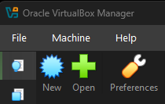
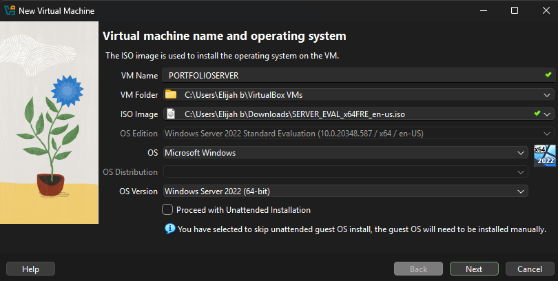
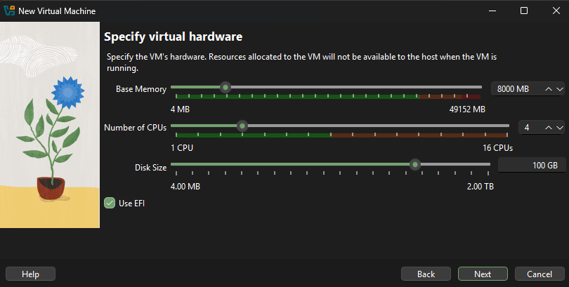

Part One: creating an active directory server
In this guide, I will show you the first steps to setting up your active directory using windows server 2022.

Our first step will be to download the correct windows 2022 server version for your operating system and language. I will be using the x64 arc and English for my language. We will then open our virtual machine (if that's what you are running your server on of course). I am using Oracle VirtualBox to running My server but you can run whatever works best for your project.

Select the option to create a new machine.

I am naming my machine 'PORTFOLIOSERVER' but you can name it whatever you would like. Under the 'vmfolder' option, select where you would like the virtual machine to sit on your actual machine. I am using my C: drive. Next you will want to select the ISO file for the server you are using. This will be the windows server file you downloaded direct from microsoft. After checking over everything again, hit next.

Now we will need to allocate resources from our main machine to the VM (virtual Machine) so that it can use them. I reccomend atleast 6000mb of ram and 100gb of storage. Thee minimum CPU is 2 but I am using 4 as I have the resources to do so.